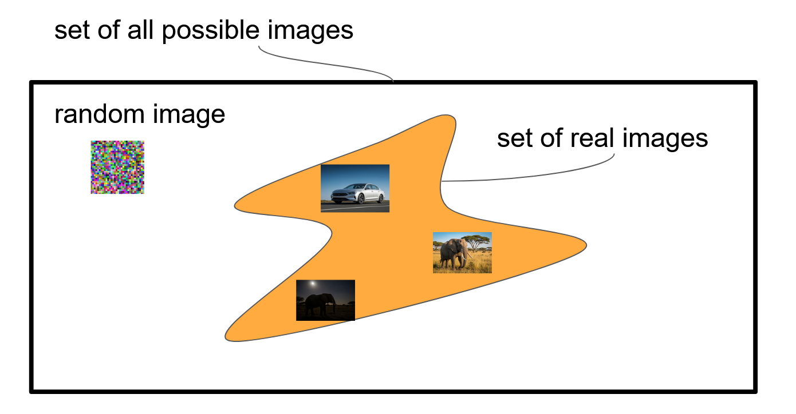
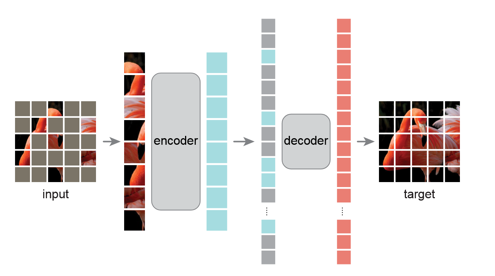
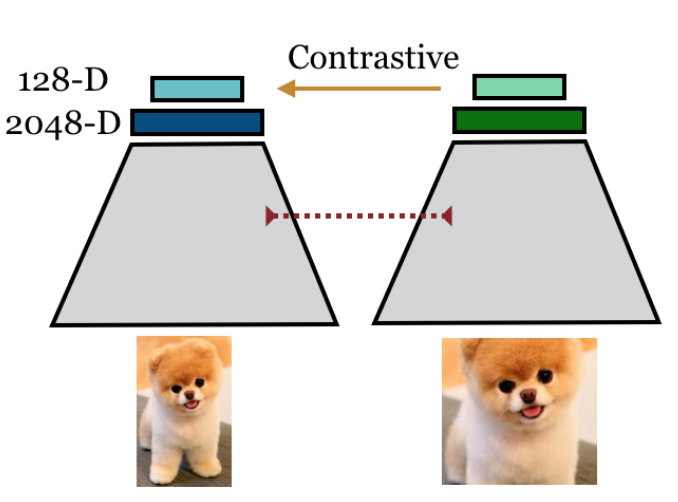
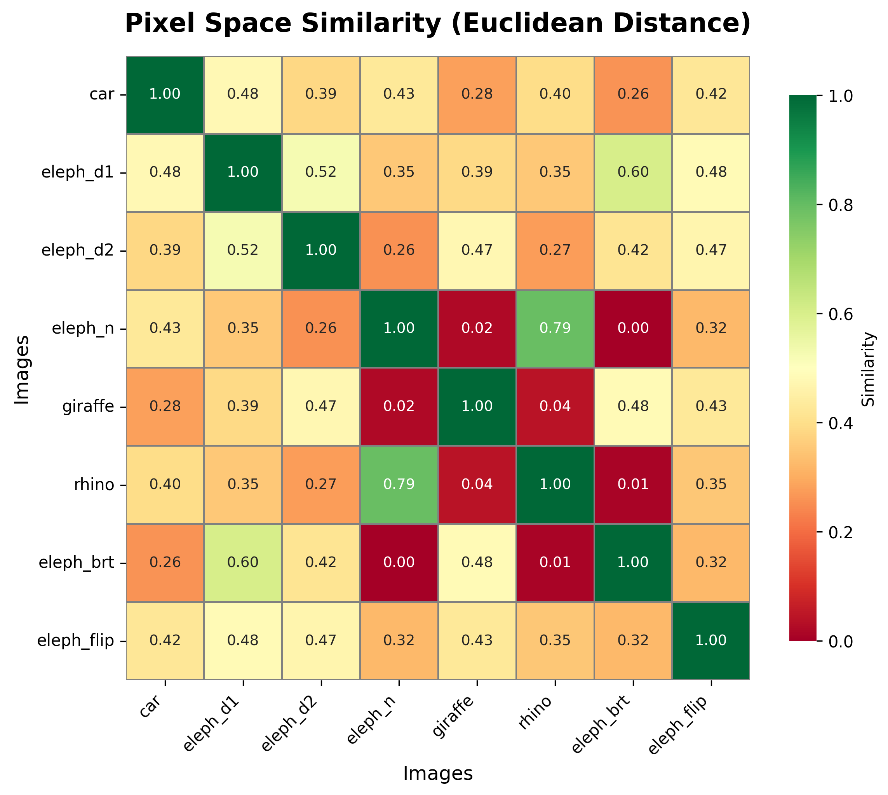
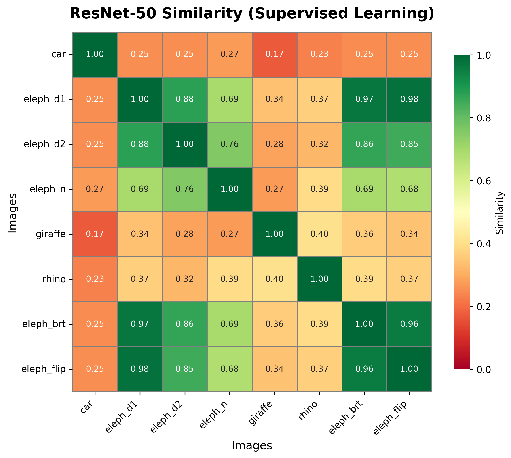
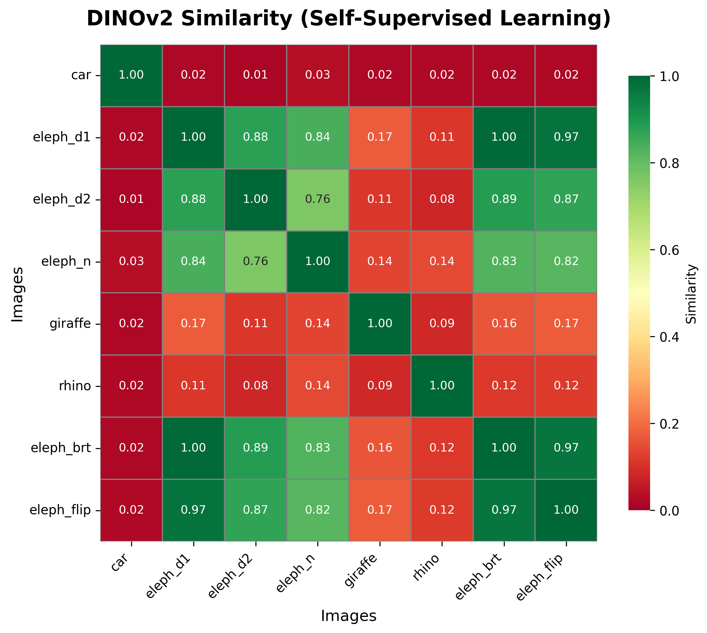

"""
A photograph of an elephant facing the camera.
The elephant has large tusks and ears and is standing in a flat savannah.
Is is bright day light with a cloudy sky.
"""4 - Representation Learning
TipLearning Objectives
By the end of this lecture you should be able to:
- Define representation learning and explain why transforming raw pixels into semantic embeddings / representations enables efficient downstream task performance.
- Understand the balance between invariance (robustness to nuisance factors) and selectivity (discriminating semantically distinct inputs) in learned representations.
- Know supervised, self-supervised (contrastive, masked autoencoding, self-distillation), and weakly supervised (vision-language) learning paradigms on a high-level.
- Distinguish between global representations (single embedding per image) and local representations (spatially-resolved feature maps) and identify appropriate use cases for each.
- Select appropriate adaptation strategies (k-NN → linear probe → adapters/LoRA → partial fine-tuning → full fine-tuning) based on dataset size, computational resources, and task requirements.
- Justify model selection between DINOv3, CLIP, and supervised models for specific downstream tasks considering training objectives,and few-shot vs zero-shot requirements.
- Apply practical transfer learning workflows using Hugging Face Transformers and timm libraries for real-world computer vision tasks.
TipTLDR Recap
Short summary:
- Representation learning transforms high-dimensional raw data into compact, semantically meaningful embeddings where distances reflect task-relevant similarities, enabling efficient transfer to downstream tasks.
- Three learning paradigms yield distinct representations: (1) Supervised learning on labeled data (e.g., ImageNet ResNet) produces category-aligned features, (2) Self-supervised methods (SimCLR, MAE, DINO/v2/v3) learn without labels via contrastive learning, masked reconstruction, or self-distillation, (3) Weakly supervised approaches (CLIP) align vision and language for zero-shot capabilities.
- Global vs local representations: Global embeddings (e.g., [CLS] token) capture image-level semantics ideal for classification/retrieval; local patch tokens preserve spatial structure essential for dense prediction tasks like segmentation and detection.
- Practical adaptation hierarchy: Start simple and add complexity only when needed: (1) k-NN baseline (no training), (2) Linear probe (freeze encoder), (3) LoRA/Adapters (parameter-efficient), (4) Partial fine-tuning (unfreeze top layers), (5) Full fine-tuning (last resort for large datasets).
- Model selection heuristics: Use DINOv3 for discriminative vision tasks and few-shot learning, CLIP for zero-shot classification and vision-language alignment, MAE when reconstruction pretraining aligns with your task, and supervised CNNs when computational efficiency is critical.
- Task-relevant invariance is crucial: Representations must preserve information necessary for downstream tasks (e.g., color for flower classification, orientation for medical imaging) while discarding true nuisance factors.
1 Motivation
Different properties and challenges, such as the semantic gap, are reasons modelling images is difficult. In particular extracting generic, semantically meaningful information is hard. Humans, however, excel at this task and can easily and comprehensively describe images with relatively few bits of information. A good example is Figure 1:

It is easy for humans to describe the image. For example:
Of course: a lot of information is lost, however, practically relevant information is preserved!
NoteInformation Content: Raw vs Natural Language
Let’s quantify the dramatic compression achieved by semantic description:
Raw Image (Pixel Representation):
- Resolution: 640 × 360 pixels
- Channels: 3 (RGB)
- Bits per pixel: 8 bits per channel
| Representation | Size (bits) | Size (KB) | Compression Factor |
|---|---|---|---|
| Raw RGB Image | 5,529,600 | 675.0 | 1× |
| Natural Language (UTF-8) | 1,312 | 0.16 | 4215× |
| Natural Language (ASCII) | 1,148 | 0.14 | 4817× |
We can also say: By describing the image we represent the image with natural language, instead of the raw pixels.
This is exactly what Representation Learning is interested in: How can we find compact representations wich are significantly smaller than the raw, original representations while retaining relevant information?
The idea is that such compact representations are well suited for down-stream tasks, such as image classification.
One motivation to represent images in a different space than with raw pixels (data space) is the enormous difference between the set of all possible images and the set of natural (real-world) images. This indicates that representing images in pixel space is not efficient. As illustrated in Figure 2, the subset of natural images occupies only a tiny fraction of the entire image space. For instance, for RGB images of size \(256 \times 256\) pixels with 255 possible intensity values per channel, the total number of possible images is \(255^{256 \times 256 \times 3}\), an astronomically large number, effectively infinite from a practical standpoint. This enables strong compression if we can find a more suitable space or coordinate system to represent images.

2 What Is Representation Learning?
A representation is the output \(\mathbf{z} = f(\mathbf{x})\) produced by an encoder \(f\) applied to input \(\mathbf{x}\); \(\mathbf{z}\) retains task‑relevant structure while discarding nuisance variation. The encoder \(f\) is the mapping; the representation \(\mathbf{z}\) is its result.
Therefore, when we refer to representations we typically mean vector-valued (distributed) representations and not, for example, natural language descriptions.
2.1 Intuition
Let’s take a look at the (synthetic) images in Figure 3:


Imagine you have to represent those in 2-D: \(\mathbf{z} \in \mathbb{R}^2\). How would you proceed from a human point of view?

NoteQuestion: Representing Images
How would you represent the images of Figure 3 in 2 dimensions? Why?
Hint: Similar images might should be close to each other. Exact positions do not matter, only distances.
Click for result
Key Considerations:
The images demonstrate different types of similarity challenges in representation learning:
Same class, same conditions (Elephant Day 1 & Elephant Day 2): These are most similar - both elephants photographed in daylight. They exhibit intra-class variation while maintaining the same semantic category.
Same class, different conditions (Elephant Day vs. Elephant Night): Moderate similarity - same animal class but dramatically different lighting conditions. This tests illumination invariance.
Different classes, same conditions (Elephants, Giraffe, Rhino by day): Animals share similar contexts (daytime, natural habitat) but different semantics, requiring inter-class discrimination.
Different domain (Animals vs. Car): Least similar - represents a complete domain shift from wildlife to manufactured objects.
Ideal representation learning: A good model should group the two daytime elephants closely, maintain reasonable similarity between day/night elephants, distinguish between different animal classes, and clearly separate animals from vehicles.
2.2 What are good representations?
Good representations transform raw data into a format that makes relevant patterns explicit and accessible. They represent a semantic coordinate systems where distances \(\|\mathbf{z}_i - \mathbf{z}_j\|_2\) reflect meaningful relationships.

Mathematical Framework:
Given input \(\mathbf{x} \in \mathcal{X}\) and encoder \(f: \mathcal{X} \to \mathcal{Z}\), we want representation \(\mathbf{z} = f(\mathbf{x})\) such that:
2.2.1 Invariance & Selectivity Balance
- Invariance: \(\|f(\mathbf{x}) - f(g(\mathbf{x}))\|_2 < \epsilon\) for nuisance transform \(g\) (lighting, pose)
- Selectivity: \(\|f(\mathbf{x}_i) - f(\mathbf{x}_j)\|_2 > \delta\) for semantically different \(\mathbf{x}_i, \mathbf{x}_j\)
- Trade-off: Too much invariance → loss of discriminative details
- Sweet spot: Preserve task-relevant variations, discard irrelevant ones
2.2.2 Geometric Structure Preservation
- Smooth manifold: Similar semantic concepts cluster in representation space
- Composability: \(f(\mathbf{x}_1) \oplus f(\mathbf{x}_2) \approx f(\text{combine}(\mathbf{x}_1, \mathbf{x}_2))\) for vector operations
- Interpolability: Linear interpolation \(\alpha f(\mathbf{x}_1) + (1-\alpha) f(\mathbf{x}_2)\) yields meaningful intermediate concepts
2.2.3 Transfer Efficiency
- Low sample complexity: Few examples needed for downstream adaptation
- Broad applicability: Same \(f(\cdot)\) works across multiple tasks/domains
- Graceful degradation: Performance degrades slowly with domain shift
2.2.4 Computational Practicality
- Compact dimensionality: \(\text{dim}(\mathbf{z}) \ll \text{dim}(\mathbf{x})\) while preserving information
- Fast computation: Forward pass \(f(\mathbf{x})\) efficient for real-time applications
- Stable training: Representation learning converges reliably
3 Deep Image Representations
There are multiple ways to learn image representations with deep learning, using different learning paradigms and objectives.
3.1 Supervised Learning
Supervised pretraining learns \(f(\cdot)\) by predicting human labels (e.g., ImageNet classes) with a loss like cross-entropy. Deep networks progressively transform pixels into higher-level semantics, and linear probes on the penultimate layer often separate classes.

3.2 Weakly Supervised Learning
Weak supervision uses noisy/partial labels at scale—hashtags, alt-text, or image–text pairs. A landmark example is CLIP (see Radford et al. (2021)), trained to align images and their captions via contrastive learning. It enables zero-shot recognition by turning text prompts into classifiers (e.g., “a photo of a cat”). This reduces annotation cost and yields broadly transferable features. See Figure 7 for an illustration.
NoteCLIP Loss
Composite objective. CLIP jointly trains an image encoder \(f_\theta\) and a text encoder \(g_\phi\) to align matched image–text pairs using a symmetric contrastive (InfoNCE) loss with a learned temperature (logit scale).
Setup. For a batch of \(N\) paired samples \(\{(x_i, y_i)\}_{i=1}^N\):
- Image features: \(\tilde{\mathbf{v}}_i = \frac{f_\theta(x_i)}{\|f_\theta(x_i)\|}\)
- Text features: \(\tilde{\mathbf{t}}_i = \frac{g_\phi(y_i)}{\|g_\phi(y_i)\|}\)
- Learned logit scale: \(\alpha = \exp(s)\) with parameter \(s\) (equivalently temperature \(\tau = 1/\alpha\))
- Similarities (cosine scaled): \(s_{ij} = \alpha \, \tilde{\mathbf{v}}_i^\top \tilde{\mathbf{t}}_j\)
Image-to-text loss (with in-batch negatives). \[\begin{equation} \mathcal{L}_{i \to t} = \frac{1}{N} \sum_{i=1}^{N} -\log \frac{\exp\!\big(s_{ii}\big)} {\sum_{j=1}^{N} \exp\!\big(s_{ij}\big)} \, . \end{equation}\]
Text-to-image loss (symmetric direction). \[\begin{equation} \mathcal{L}_{t \to i} = \frac{1}{N} \sum_{j=1}^{N} -\log \frac{\exp\!\big(s_{jj}\big)} {\sum_{i=1}^{N} \exp\!\big(s_{ij}\big)} \, . \end{equation}\]
Total objective. \[\begin{equation} \mathcal{L}_{\text{CLIP}} = \tfrac{1}{2} \left( \mathcal{L}_{i \to t} + \mathcal{L}_{t \to i} \right) \, . \end{equation}\]
Components (at a glance).
- \(f_\theta, g_\phi\): image/text encoders (e.g., ViT/CNN and Transformer).
- \(\tilde{\mathbf{v}}_i, \tilde{\mathbf{t}}_i\): \(\ell_2\)-normalized embeddings (cosine similarity).
- \(\alpha\) (or \(1/\tau\)): learned scaling controlling softness of the softmax.
- In-batch negatives: all non-matching pairs in the current batch act as negatives.
- Optimization: cross-entropy over the similarity matrix in both directions.
Inference note: zero-shot classification uses text prompts \(y_c =\) “a photo of a \(\{class\}\)” to form class prototypes \(\tilde{\mathbf{t}}_c\) and picks \(\arg\max_c \tilde{\mathbf{v}}^\top \tilde{\mathbf{t}}_c\).

3.3 Self-Supervised Learning
Self-supervised learning (SSL) creates pretext tasks from raw data (no human labels) to shape \(f(\cdot)\). Two dominant families are imputation/masked modeling and contrastive/self-distillation.
3.3.1 Imputation
Masked image modeling hides random patches and trains the model to reconstruct them. Masked Autoencoding (MAE) (see He et al. (2021)) shows that an asymmetric encoder–decoder and high masking ratio (≈75%) scale well and produce strong features for transfer. Intuition: to fill in what’s missing, the model must internalize global structure and semantics.
NoteMasked Autoencoding Loss
Setup. Given an image \(x\), MAE patchifies it and masks a large subset of patches \(\mathcal{M}\) (typically \(\sim 75\%\)), keeping visible patches \(\mathcal{V}\).
- Patchify: \(X = \mathrm{Patchify}(x) \in \mathbb{R}^{P \times d}\) with \(P\) patches and patch-dimension \(d\).
- Split: \(X = \{X_{\mathcal{V}}, X_{\mathcal{M}}\}\).
- Encoder \(E_\theta\) processes only visible tokens \(X_{\mathcal{V}}\) to produce latents \(H = E_\theta(X_{\mathcal{V}})\).
- Decoder \(D_\phi\) receives \(H\) plus learned mask tokens at masked positions and predicts reconstructions \(\hat{X}_{\mathcal{M}} = D_\phi(H, \text{mask tokens})\).
Reconstruction loss (masked patches only). \[\begin{equation} \mathcal{L}_{\text{MAE}} = \frac{1}{|\mathcal{M}|} \sum_{p \in \mathcal{M}} \left\| \hat{X}_{p} - \tilde{X}_{p} \right\|_2^2 , \end{equation}\] where \(\tilde{X}\) are normalized pixel targets (e.g., per-channel mean/variance normalization) in patch space.
Components (at a glance).
- \(X\): patchified image tokens; \(\mathcal{V}/\mathcal{M}\): visible/masked index sets.
- \(E_\theta\) (ViT encoder): operates on visible tokens only (asymmetric design).
- \(D_\phi\) (lightweight decoder): reconstructs masked tokens from encoder latents \(+\) mask tokens.
- \(\hat{X}_{\mathcal{M}}\): decoder predictions at masked positions.
- \(\tilde{X}_{\mathcal{M}}\): normalized pixel targets at masked positions.
- Loss averages only over masked patches, encouraging learning of global structure.
Notes.
- High mask ratio \(+\) asymmetric encoder/decoder yields efficient pretraining and strong transfer.
- Some variants replace pixel MSE with feature/perceptual losses, but vanilla MAE uses MSE on normalized pixels.

3.3.2 Contrastive Learning
Contrastive learning is a learning paradigm whereby a model learns to represent data points such that similar points are nearby and disimilar points are far apart. The SimCLR (Chen et al. (2020)) paper demonstrated how such a model can be learned and achieve high-accuracy on down-stream tasks. Figure 9 illustrateds the concepts: From a given image create two views (augmented versions) and contrast them with different images in a large batch of images (InfoNCE loss).
NoteInfoNCE Loss
Core Idea: InfoNCE maximizes mutual information between positive pairs while contrasting against negative samples.
Mathematical Form: \[ \mathcal{L}_{\text{InfoNCE}} = -\mathbb{E}\left[\log \frac{\exp(\text{sim}(z_i, z_i^+)/\tau)}{\exp(\text{sim}(z_i, z_i^+)/\tau) + \sum_{j=1}^{N-1} \exp(\text{sim}(z_i, z_j^-)/\tau)}\right] \]
Components:
- \(z_i\): Anchor embedding (encoded from image \(x_i\))
- \(z_i^+\): Positive embedding (different augmentation of same image)
- \(z_j^-\): Negative embeddings (from different images in batch)
- \(\text{sim}(\cdot, \cdot)\): Similarity function (typically cosine similarity)
- \(\tau\): Temperature parameter controlling concentration
Temperature Effect:
- Small \(\tau\) (\(\to 0\)): Focuses on hardest negatives, sharper distributions
- Large \(\tau\) (\(\to \infty\)): Uniform weighting, softer distributions
- Typical values: \(\tau \in [0.07, 0.5]\)
Intuition: The loss encourages the model to:
- Pull positive pairs close together in embedding space
- Push negative pairs apart
- Form tight clusters of semantically similar samples
Practical Considerations:
- Requires large batch sizes (e.g., 256-4096) for sufficient negatives
- Alternative: Memory banks (MoCo) or queue-based negatives
- Hard negative mining can improve learning efficiency


3.3.3 Self-Distillation
Self-distillation is an interesting concept: A student model tries to match the outputs of a teacher model’s distribution over a given image. This principle was introduced in the BYOL paper (see Grill et al. (2020)) and led to the DINO-series of models: DINO (Caron et al. (2021)), DINOv2 (Oquab et al. (2024)), and DINOv3 (Siméoni et al. (2025)) are non-contrastive: a student matches the teacher’s distribution over crops (multi-crop), using centering and sharpening. This yields strong global descriptors and high-quality local (patch) tokens.
NoteDINOv3 Loss
Composite objective. DINOv3 trains a student ViT against an EMA teacher with multi-crop views, combining a global DINO loss, a local iBOT loss, a KoLeo uniformity regularizer, and (in a refinement stage) a Gram anchoring loss on patch similarities:
\[\begin{align} \mathcal{L} &= \underbrace{\mathcal{L}_{\text{DINO}}}_{\text{global crops}} + \lambda_{\text{iBOT}} \underbrace{\mathcal{L}_{\text{iBOT}}}_{\text{masked local tokens}} + \lambda_{\text{KoLeo}} \underbrace{\mathcal{L}_{\text{KoLeo}}}_{\text{uniformity on }[\text{CLS}]} + \lambda_{\text{Gram}} \underbrace{\mathcal{L}_{\text{Gram}}}_{\text{refinement}}. \end{align}\]
Global DINO (distribution matching, no negatives). Student probabilities \(p_s=\mathrm{softmax}(g_s(z_s)/\tau_s)\); teacher targets \(q_t=\mathrm{stopgrad}\!\left[\mathrm{softmax}\!\left((g_t(z_t)-c)/\tau_t\right)\right]\) with centering \(c\) and temperatures \(\tau_s,\tau_t\). \[\begin{equation} \mathcal{L}_{\text{DINO}} \;=\; - \sum_{k} q_t^{(k)} \log p_s^{(k)} \quad \text{(summed over pairs of student/teacher crops).} \end{equation}\]
Local iBOT (masked token prediction). For masked student patches \(m \in \mathcal{M}\), match teacher patch-level distributions: \[\begin{equation} \mathcal{L}_{\text{iBOT}} \;=\; - \frac{1}{|\mathcal{M}|}\sum_{m \in \mathcal{M}}\sum_{k} q_{t,m}^{(k)} \log p_{s,m}^{(k)} . \end{equation}\]
KoLeo (feature uniformity). Encourages spread (near-uniform) class-token embeddings; implemented as the KoLeo entropy estimator on mini-batches (schematic form): \[\begin{equation} \mathcal{L}_{\text{KoLeo}} \;\approx\; -\frac{1}{N}\sum_{i=1}^{N} \log d_i \quad \text{with } d_i \text{ the NN distance of } z^{[\text{CLS}]}_i . \end{equation}\]
Gram anchoring (refinement step). Align student patch-similarity structure to a “Gram teacher.” Let \(\tilde{Z}_s,\tilde{Z}_g \in \mathbb{R}^{P \times D}\) be \(\ell_2\)-normalized patch features (rows) for student and Gram-teacher on a global crop. With Gram matrices \(G(\tilde{Z})=\tilde{Z}\tilde{Z}^\top\): \[\begin{equation} \mathcal{L}_{\text{Gram}} \;=\; \big\| G(\tilde{Z}_s) - G(\tilde{Z}_g) \big\|_F^2 . \end{equation}\]
Notes.
- Teacher is an EMA of the student; teachers view only global crops, students see global + local crops; iBOT masks a subset of student patches.
- Gram anchoring is applied in a late refinement phase to restore patch-level consistency without hurting global performance.

NoteDINOv3 Overview Video
Watch Meta’s introduction to DINOv3, explaining the key improvements over DINOv2 and the self-distillation approach:
3.4 Global vs Local Representations
Global representations summarize an image into a single embedding (e.g., a [CLS] token or pooled feature) that captures overall semantics.
CLIP is a prototypical global model: it aligns an image-wide vector with a text embedding, which is ideal for zero-shot classification, retrieval, and broad semantic similarity at scale.
In contrast, the DINO family (incl. DINO/DINOv2/DINOv3) produces both strong global descriptors and rich local tokens via self-distillation and multi-crop training. These local features carry spatially resolved cues useful for tasks such as segmentation or obejct detection. The global token remains competitive for classification and retrieval.
4 Comparing Representations
The following illustrates different representations for the images in Figure 12.

In Figure 14, Figure 15, and Figure 16 we show cosine similarities between normalized representations and compare to pixel-space similarity (Figure 13).
Similarity Metrics:
For images represented as vectors \(\mathbf{z}_i, \mathbf{z}_j \in \mathbb{R}^d\):
Euclidean Distance (Pixel Space): \[d_{\text{L2}}(\mathbf{z}_i, \mathbf{z}_j) = \|\mathbf{z}_i - \mathbf{z}_j\|_2 = \sqrt{\sum_{k=1}^d (z_i^{(k)} - z_j^{(k)})^2}\]
Cosine Similarity: \[\text{sim}_{\cos}(\mathbf{z}_i, \mathbf{z}_j) = \frac{\mathbf{z}_i^\top \mathbf{z}_j}{\|\mathbf{z}_i\|_2 \|\mathbf{z}_j\|_2} = \frac{\sum_{k=1}^d z_i^{(k)} z_j^{(k)}}{\sqrt{\sum_{k=1}^d (z_i^{(k)})^2} \sqrt{\sum_{k=1}^d (z_j^{(k)})^2}}\]
where \(\text{sim}_{\cos} \in [-1, 1]\) with 1 indicating perfect alignment, 0 indicating orthogonality, and -1 indicating opposite directions.




NoteQuestion: Which Representations Do You Favour? And Why?
Looking at the similarity matrices, which representation do you prefer and why?
Click for Discussion
Pixel Space (Figure 13):
- Not suitable for any semantic task
- Captures low-level appearance variations (lighting, pose, exact pixel alignment)
- Cannot distinguish semantic categories from superficial similarities
ResNet-50 Supervised (Figure 14):
- Much better than pixel space but still limited
- Shows semantic grouping (elephants cluster)
- Trained on ImageNet classes, may not transfer optimally to fine-grained tasks
- Some sensitivity to lightning (elephant night vs day)
CLIP Multimodal (Figure 15):
- Good semantic structure aligned with natural language concepts
- Clear separation between major categories (animals vs. vehicles)
- Limitation: Lower differentiation within categories
- Best for: Broad semantic retrieval and zero-shot open-vocabulary tasks
- Trade-off: Language alignment may sacrifice fine-grained visual distinctions
DINOv2 Self-Supervised (Figure 16):
- Sharp discrimination between semantic classes (Elephant vs Giraffe)
- Strong within-category structure (elephant day variants)
- Clear night/day distinctions while preserving identity
- Best for: Few-shot learning, fine-grained classification, dense prediction tasks
- Pure vision objective without language bias preserves visual details
Recommendation hierarchy:
- DINOv2/v3: Default choice for vision-centric tasks requiring discriminative power
- CLIP: When zero-shot capabilities or text-image alignment is critical
- Supervised CNN: When computation is limited and broad categories suffice
- Pixel space: Never for semantic tasks (only for exact duplicate detection)
WarningTask-Relevant Invariance
Critical consideration: Invariance to task-relevant attributes can render representations useless.
Examples of harmful invariance:
- Color-invariant features for flower classification: If representations discard color information, distinguishing between red and yellow tulips becomes impossible.
- Rotation-invariant features for orientation tasks: Medical imaging often requires preserving anatomical orientation; rotation invariance destroys critical diagnostic information.
- Scale-invariant features for size estimation: Object measurement tasks require preserving absolute or relative size cues.
- Texture-invariant features for material classification: Distinguishing wood from metal requires texture sensitivity.
Design principle: Match your representation’s invariances to your task requirements. When in doubt, preserve information and let the downstream model learn to ignore irrelevant variations.
5 Using Representations: A Practical Guide
Always begin with the simplest approach and only add complexity when performance gaps justify it. For classification/retrieval, global embeddings (e.g., CLIP) enable zero-/few-shot learning. For dense tasks (segmentation, object detection), local (patch) tokens from ViTs (e.g., DINOv3) feed pixel-aligned heads.
Typical progression:
k-NN baseline (no training) Think of this as “find the most similar examples.” We store the embeddings of labeled images and, for a new image, look up the k most similar ones; the majority label wins. It’s fast to set up, needs no training, and gives a quick reality check on representation quality. See Figure 17 for illustrative code.
Linear probe (freeze encoder, train head) Keep the powerful pretrained encoder fixed and train a tiny linear layer on top. If this small layer reaches good accuracy, it means the embeddings already separate classes well. It’s cheap, stable, and a great first serious baseline. See Figure 18 for illustrative code.
LoRA/Adapters (efficient parameter tuning) Instead of updating all model weights, add small “adapter” modules (or low-rank updates) and train only those. You keep most of the original knowledge while adapting to your task with far fewer trainable parameters—faster, lighter, and less prone to overfitting than full fine-tuning. See Figure 19 for illustrative code.
Partial fine-tune (unfreeze top layers) Unfreeze just the last few layers of the encoder and train them (plus the head). This lets the model adjust higher-level features to your data while keeping the earlier, general features intact. It’s a good middle ground between speed and task fit. See Figure 20 for illustrative code.
Full fine-tune (last resort) Train all the model’s weights on your dataset. This can yield the best alignment to your task but is computationally expensive and risks overfitting—especially with limited data. Use it when you have enough data/compute and simpler options plateau. See Figure 21 for illustrative code.
import torch, sklearn.neighbors as sk
from transformers import AutoModel, AutoImageProcessor
model_id = "google/vit-base-patch16-224"
enc = AutoModel.from_pretrained(model_id).eval()
proc = AutoImageProcessor.from_pretrained(model_id)
def feats(imgs): # imgs: list of PIL images
px = proc(imgs, return_tensors="pt")["pixel_values"]
with torch.no_grad():
z = enc(pixel_values=px).last_hidden_state[:,0] # [CLS]
return z.cpu().numpy()
Xtr = feats(train_images); Ytr = train_labels
Xte = feats(test_images)
knn = sk.KNeighborsClassifier(n_neighbors=5).fit(Xtr, Ytr)
pred = knn.predict(Xte)import torch
from torch import nn, optim
import timm
backbone = timm.create_model("vit_base_patch16_224", pretrained=True)
for p in backbone.parameters():
p.requires_grad = False
embed_dim = backbone.num_features
head = nn.Linear(embed_dim, num_classes)
def forward(images):
with torch.no_grad():
z = backbone.forward_features(images)[:,0] # [CLS]
return head(z)
opt = optim.AdamW(head.parameters(), lr=5e-4)
# training loop: logits = forward(images); loss = CE(logits, y); loss.backward(); opt.step()import torch
from transformers import AutoModel
from peft import LoraConfig, get_peft_model
model_id = "google/vit-base-patch16-224"
model = AutoModel.from_pretrained(model_id)
config = LoraConfig(
r=16, lora_alpha=32, lora_dropout=0.05,
target_modules=["query","key","value","fc"], # adjust to module names
bias="none", task_type="FEATURE_EXTRACTION"
)
model = get_peft_model(model, config)
head = torch.nn.Linear(model.config.hidden_size, num_classes)
def forward(pixel_values):
z = model(pixel_values=pixel_values).last_hidden_state[:,0]
return head(z)
# Optimizer over LoRA params + head params onlyimport timm, torch
from torch import nn
model = timm.create_model("vit_base_patch16_224", pretrained=True)
# Freeze everything
for p in model.parameters():
p.requires_grad = False
# Unfreeze top transformer block(s)
for p in model.blocks[-2:].parameters():
p.requires_grad = True # last 2 blocks
# Replace / add classification head
model.head = nn.Linear(model.num_features, num_classes)
# Optimizer over unfrozen blocks + head
trainable = [p for p in model.parameters() if p.requires_grad]
opt = torch.optim.AdamW(trainable, lr=1e-4)import torch
from transformers import AutoModelForImageClassification
model_id = "google/vit-base-patch16-224"
model = AutoModelForImageClassification.from_pretrained(
model_id, num_labels=num_classes, ignore_mismatched_sizes=True
)
for p in model.parameters():
p.requires_grad = True # unfreeze all
opt = torch.optim.AdamW(model.parameters(), lr=5e-5)
# Standard supervised loop with processor(...)-> pixel_values -> model(pixel_values, labels=y)6 Quiz
NoteQuestion 1: Understanding Representation Learning
Question: Why do representations learned from raw pixels (pixel-space similarity) fail to capture semantic relationships between images?
Click for Answer
Answer: Pixel-space representations measure low-level appearance differences (exact color values, lighting conditions, spatial alignment) rather than high-level semantic content. Two images of the same object under different lighting or poses will have large pixel-level distances despite being semantically identical. For example, in Figure 13, pixel distances cannot distinguish between “different elephants in similar lighting” vs “same elephant in different lighting”: both create similar pixel-level differences. Good representations compress the enormous space of possible images (\(255^{H \times W \times C}\) combinations) into a semantic coordinate system where distances reflect meaning.
NoteQuestion 2: Invariance and Selectivity Trade-off
Question: Explain the invariance-selectivity trade-off in representation learning. Provide one concrete example where too much invariance would harm performance on a specific task.
Click for Answer
Answer:
The Trade-off: Good representations must balance two competing goals:
- Invariance: \(\|f(\mathbf{x}) - f(g(\mathbf{x}))\|_2 < \epsilon\) for nuisance transforms \(g\) (lighting, pose changes)
- Selectivity: \(\|f(\mathbf{x}_i) - f(\mathbf{x}_j)\|_2 > \delta\) for semantically different inputs
Concrete Example - Flower Classification: If representations are completely color-invariant (treating all colors as identical), distinguishing between red roses and yellow roses becomes impossible, even though color is the primary discriminative feature. The model would collapse all flower images to similar embeddings regardless of color, destroying task-critical information.
Other Examples:
- Medical imaging: Rotation invariance destroys anatomical orientation information needed for diagnosis
- Object size estimation: Scale invariance removes absolute/relative size cues
- Material classification: Texture invariance prevents distinguishing wood from metal
Design Principle: Match invariances to task requirements — preserve information the downstream task needs, discard only true nuisance factors.
NoteQuestion 3: Comparing SSL Objectives
Question: What is the key advantage of self-distillation methods (DINO/DINOv2/DINOv3) over contrastive learning methods (SimCLR)?
Click for Answer
Answer:
Key Advantage: Self-distillation does not require explicit negative samples or large batch sizes.
Contrastive Learning (SimCLR):
- Requires large batches (256-4096) to provide sufficient negative pairs
- InfoNCE loss: \(\mathcal{L} = -\log \frac{\exp(\text{sim}(z_i, z_i^+)/\tau)}{\exp(\text{sim}(z_i, z_i^+)/\tau) + \sum_{j=1}^{N-1} \exp(\text{sim}(z_i, z_j^-)/\tau)}\)
- Computational cost and memory scale with batch size
- Needs careful negative mining strategies
Self-Distillation (DINO):
- Student network matches teacher’s probability distribution over crops
- Teacher is EMA of student weights (no separate training)
- Emergent clustering arises from teacher-student dynamics and centering/sharpening
- Works with smaller batches, more memory-efficient
- Bonus: Produces both strong global descriptors AND high-quality local (patch) tokens
Result: DINO-family models achieve state-of-the-art transfer performance with simpler training dynamics and lower computational requirements.
NoteQuestion 4: Global vs Local Representations
Question: When should you use global representations versus local representations? Give one specific task example for each.
Click for Answer
Answer:
Global Representations (single embedding per image, e.g., [CLS] token):
- Use when: Task requires image-level understanding without spatial localization
- Examples:
- Image classification: “Is this a cat or dog?” — only need overall category
- Image retrieval: “Find similar vacation photos” — semantic similarity at image level
- Zero-shot classification (CLIP): “Does this image contain a beach?” — image-text alignment
Local Representations (spatially-resolved patch tokens, e.g., DINOv3 patch features):
- Use when: Task requires pixel-level or region-level understanding
- Examples:
- Semantic segmentation: “Label every pixel as road/car/pedestrian” — need spatial structure
- Object detection: “Find all bounding boxes containing cars” — need localization
- Dense prediction: “Generate depth map for each pixel” — requires preserved spatial information
Key Difference: Global embeddings through pooling (e.g., Global Average Pooling: \(\text{GAP}(X) = \frac{1}{H \times W}\sum_{i,j} X_{i,j}\)) discard spatial structure for efficiency, while local features maintain the spatial grid of patch embeddings.
Practical Tip: Many modern architectures (DINOv3, ViTs) provide both — use the [CLS] token for global tasks and patch tokens for dense tasks.
NoteQuestion 5: Adaptation Strategy Selection
Question: You have a dataset of 1,000 labeled medical images for a specialized classification task. Describe the recommended progression of adaptation strategies and explain why you should start with the simplest approach.
Click for Answer
Answer:
Recommended Progression (from simplest to most complex):
- k-NN Baseline (0 training):
- Extract features with frozen pretrained model
- Classify by finding k nearest neighbors in feature space
- Why first: Instant results, no hyperparameters, reveals representation quality
- Code: Just
sklearn.KNeighborsClassifier(n_neighbors=5).fit(features, labels)
- Linear Probe (~1-10K parameters):
- Freeze encoder, train only linear classification head
- Why next: If this works well, embeddings already separate classes
- Benefit: Fast, stable, minimal overfitting risk with 1K samples
- LoRA/Adapters (~100K-1M parameters):
- Add small adapter modules, train only those
- Why: Allows task-specific adaptation without full fine-tuning
- Trade-off: Better fit than linear probe, much cheaper than full fine-tuning
- Partial Fine-tune (last 2-3 layers):
- Unfreeze top transformer blocks + head
- Why: Adjust high-level features while keeping general low-level features
- Risk: Need careful learning rate tuning to avoid catastrophic forgetting
- Full Fine-tune (all parameters) — Last Resort:
- Only if: Previous methods plateau AND you have sufficient data
- Risk: With only 1K samples, high overfitting risk
- Mitigation: Strong regularization, small learning rates (1e-5), early stopping
Why Start Simple:
- Diagnostic value: If k-NN works, you know the representation is good
- Resource efficiency: Avoid wasting compute on complex methods when simple ones suffice
- Overfitting prevention: With limited data (1K samples), simpler models generalize better
- Baseline establishment: Each step provides a performance ceiling to beat
Medical Imaging Specific: Consider domain shift — medical images may differ significantly from natural images (ImageNet). If k-NN/linear probe fail, the pretrained features may not transfer well, suggesting need for more adaptation or domain-specific pretraining.
Caron, Mathilde, Hugo Touvron, Ishan Misra, Hervé Jégou, Julien Mairal, Piotr Bojanowski, and Armand Joulin. 2021. “Emerging Properties in Self-Supervised Vision Transformers.” https://doi.org/10.48550/arXiv.2104.14294.
Chen, Ting, Simon Kornblith, Mohammad Norouzi, and Geoffrey Hinton. 2020. “A Simple Framework for Contrastive Learning of Visual Representations.” arXiv. https://doi.org/10.48550/arXiv.2002.05709.
Grill, Jean-Bastien, Florian Strub, Florent Altché, Corentin Tallec, Pierre H. Richemond, Elena Buchatskaya, Carl Doersch, et al. 2020. “Bootstrap Your Own Latent: A New Approach to Self-Supervised Learning.” arXiv. http://arxiv.org/abs/2006.07733.
He, Kaiming, Xinlei Chen, Saining Xie, Yanghao Li, Piotr Dollár, and Ross Girshick. 2021. “Masked Autoencoders Are Scalable Vision Learners.” arXiv. https://doi.org/10.48550/arXiv.2111.06377.
Oquab, Maxime, Timothée Darcet, Théo Moutakanni, Huy Vo, Marc Szafraniec, Vasil Khalidov, Pierre Fernandez, et al. 2024. “DINOv2: Learning Robust Visual Features Without Supervision.” arXiv. https://doi.org/10.48550/arXiv.2304.07193.
Radford, Alec, Jong Wook Kim, Chris Hallacy, Aditya Ramesh, Gabriel Goh, Sandhini Agarwal, Girish Sastry, et al. 2021. “Learning Transferable Visual Models From Natural Language Supervision.” arXiv:2103.00020 [Cs], February. http://arxiv.org/abs/2103.00020.
Siméoni, Oriane, Huy V. Vo, Maximilian Seitzer, Federico Baldassarre, Maxime Oquab, Cijo Jose, Vasil Khalidov, et al. 2025. “DINOv3.” arXiv. https://doi.org/10.48550/arXiv.2508.10104.